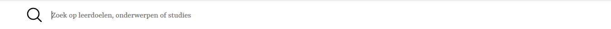
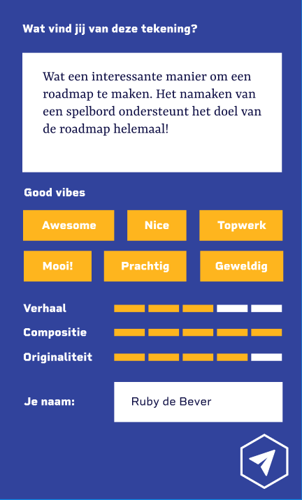
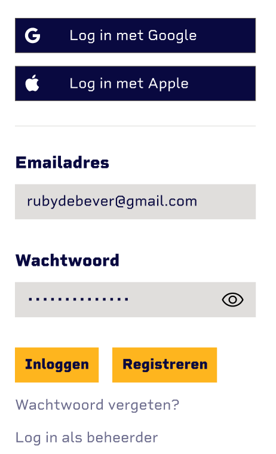

searchbar
De searchbar is wit, en laat in de voorbeeldtekst zien naar wat voor content je kunt zoeken. Er zit een tekstinput, waarin je typt wat je op wilt zoeken.
Feedback
In het feedback scherm zie je onderaan een send button, met de vorm van een 6 hoek, waarin de style van Visual Thinking goed terug komt. Ook zijn de kleuren van Visual Thinking (deze blauw en geel) terug te vinden.

Inlog Scherm
In het inlog scherm zijn er 2 text inputs, 1 voor de email en 1 voor het wachtwoord. Ook zit er een button om het wachtwoord te switchen van onzichtbaar naar zichtbaar en weer terug.
